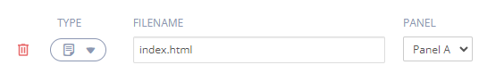
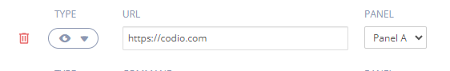
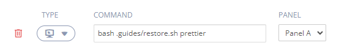
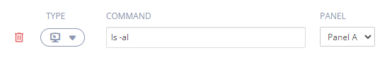
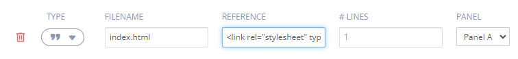
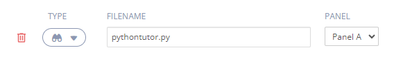
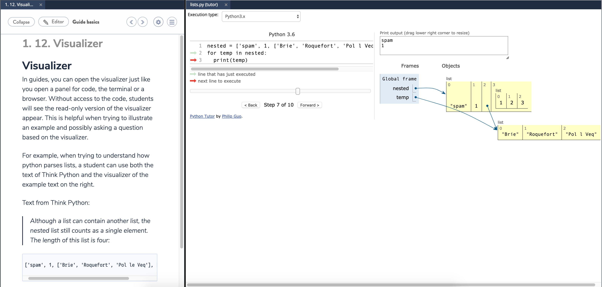
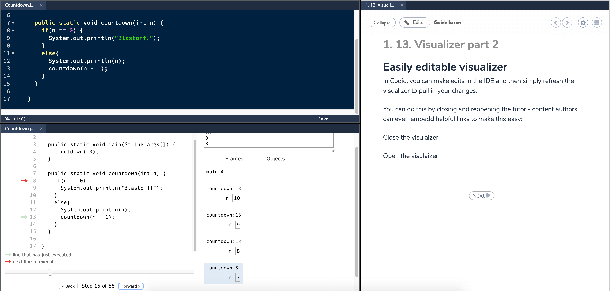
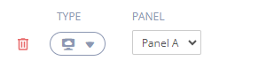
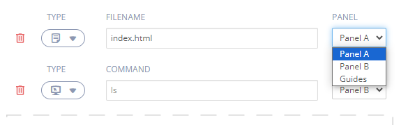

Open tabs¶
You can automatically perform any of the following actions when a page is shown:
Reconfigure the overall IDE panel layout.
Open files.
Open a url preview including external websites.
Open a terminal window and optionally run a terminal command.
Select lines you wish to highlight within each file.
Open a virtual machine when set up for students.
You should also be aware that you can achieve the same actions from Markdown directives on a page. click here for details.
Files can be opened automatically to present the student with relevant files.
The Add Tab button allows you to create multiple lines into your configuration to address most scenarios you are likely to encounter.
You can also drag and drop files in from your project file tree to the page to add them to the Open Tabs section so that file will be opened in a tab for the reader as well as Drag and Drop on the Open Tabs area in the content.
Please note: image files dragged in to a page will be automatically tagged to display within the content rather than in a new panel. If you wish to have an image file open in a panel, then you would need to add it directly in the Open Tabs area. You can also drag/drop from the file tree. The correct path to the file will be included.
Opening Files¶
To open files, select the file type from the drop down and enter the file name, including the path to the file if not in the root (/home/codio/workspace or ~/workspace) of the project workspace.

To open multiple files in the same panel, enter in the following format:
`
index.html, main.css
`
Previewing¶
To preview your project, select the Preview type from the drop down. If you wish to show a workspace or external website page, use the Preview option and enter the appropriate URL.

Please note: If the URL you are previewing does not allow embedding in an <iframe>, then you won’t be able to use https addresses. You would have to use an http address instead, in which case it will automatically open in a new browser tab and not within Codio.
Opening the terminal and running system commands¶
To open a terminal window, select the Terminal type from the drop down.
You can also specify a terminal command to run when a section is displayed. For example, your content may run bash scripts to copy files into the root (/home/codio/workspace or ~/workspace) of your project from the /.guides folder (which is hidden when content is running) at a certain point in your content.

You can also specify system commands in a new terminal window like so:

Highlighting lines in your code¶
To highlight one or more lines within an auto-opened file, select the Highlight type from the drop down and then
Enter a piece of reference text, contained within your target file, into the Reference … field
Specify the number of lines, from that reference point, you want to highlight

Using reference text rather than a line number means that if you insert anything into your file in the future, Codio is able to adjust the highlighted block based on the reference text. If you insert or remove lines within the block then you would need to adjust the line count.
If there is any potential ambiguity with this approach, simply insert a comment which is guaranteed unique and reference that.
Any combinations are acceptable and they will be opened in the order specified.
If you wish to higlighlight code but not allow students to make any changes, you can freeze code in code files.
Visualiser¶
Codio supports Python Tutor, allowing students to overcome a fundamental barrier to learning programming: understanding what happens as the computer executes each line of a program’s source code. Select Visualiser and enter the path to your file.
Supported languages:
Python
Java
JavaScript
TypeScript
Ruby
C
C++
Students can visualise what the computer is doing step-by-step as it executes those programs.

Examples¶
Python
nested = ['spam', 1, ['Brie', 'Roquefort', 'Pol l Veq'], [1, 2, 3]]
for temp in nested:
print(temp)

Java
public static void countdown(int n) {
if (n == 0) {
System.out.println("Blastoff!");
} else {
System.out.println(n);
countdown(n - 1);
}
}

For more information and examples see Python Tutor.
Open Computed VM¶
Select this option to automatically open the virtual machine for the students.

Note
If selected but the assignment is not set up for virtual machine nothing will happen for the student.
Specifying the panel number¶
If your layout for this page involves multiple panels, then you can also specify the panel letter to display the file in.

The panel order is left to right and then top to bottom and the last of all, the filetree (which you would rarely want to use).
The Guide defaults to the right unless Guides Left is specified in Page Layout.